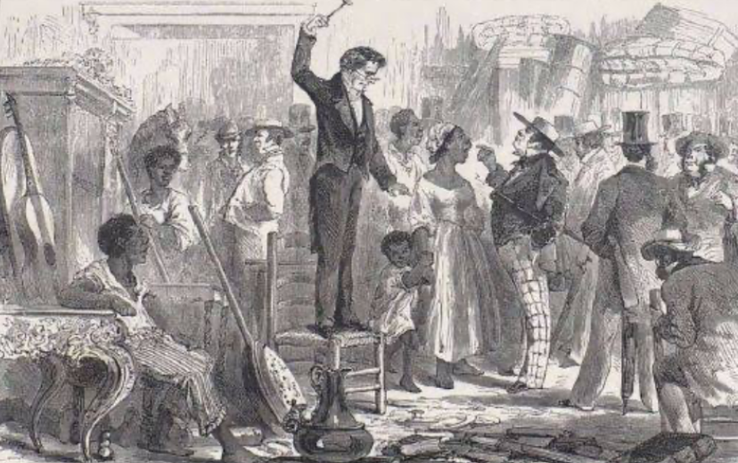

1860
A Lei nº 1.237, de 24 de setembro de 1864, reformou a legislação hipotecária e definiu que as hipotecas seriam reguladas pela lei civil, e não pelo Código Comercial, em 26 de abril de 1865 foi aprovado o Decreto nº 3.453, que regulamentou a lei, estabelecendo as bases operacionais da reforma hipotecária, embora essas leis tenham sido aprovadas em 1864 e 1865 elas haviam sendo discutidas a mais de uma década. Outro fato importante é que foi totalmente ignorado a fato que os escravos eram usados como garantia de um pagamento de uma dívida
